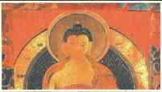

Dünyadaki en yaygın dinlerden birisidir Budizm. Eski metinlere göre Budizm’de Buda’nın öğretisi, başta Hint dinleri ve kültürleri olmak üzere diğer dinlerle ve kültürlerle karşılaştırılarak anlatılmaktadır. Bu kitapta Buda’nın yaşamı ve genedoğum öyküleri de bulunmaktadır.
ESKİ METİNLERE GÖRE
BUDİZM
(BUDACILIĞIN DİYALEKTİK YORUMU)
WALTER RUBEN
Hazırlayan:
LÜTFÜ BOZKÜRT
® Okyanus Yayıncılık ve Yapımcılık Ltd. Şti., 1995
1. Baskı: Mart 1995
2. Baskı: Ocak 1998
3. Baskı: Eylül 2000
1000 Adet
Düzelti: Esra Bilal Kapak Tasarım: Nare Ekinci
ISBN - 975 - 7200 - 00 - X
Ofset Hazırlık, Kapak Baskı, iç Baskı ve Cilt:
ÇİZSE Matbaacılık Ltd. Şti.
Tel.: (0212) 647 34 93
OKYANUS YAYINCILIK VE YAPIMCILIK LTD. ŞTİ. Ankara Cad. Konak Işhanı 34/304 3440 Cağaloğlu/istanbul Tel: (0212) 513 42 59
WALTER RÜBEN 1899 yılında Hamburg'da doğan W. Ruben çok genç yaşında Norveçli Hindolog Sten Konow'dan özel Sanskrit dersleri aldı. 1. Dünya Savaşından sonra Sten Konow'un tavsiyesi üzerine Berlin'de H. Jacobi ve H. Lvelens'ın gözetiminde Hindoloji eğitimini tamamladı ve 1924 yılında Nyaya Sutras adlı çalışmasıyla doktorasını aldı. Frankfurt üniversitesinde hocalığına Hitler iktidarı ele geçirene kadar devam etti. Zorunlu göçle birlikte Türkiye'ye gelen W. Ruben Ankara Üniversitesindeki Hindoloji kürsüsüne profesör olarak atandı. 1935-1936 yılları arasında Hindistan’a araştırma gezisi yaptı. 1948 yılında Şili'deki Santiago üniversitesi Hindoloji Kürsüsü Başkanlığına getirildi. 1950 yılında döndüğü Almanya’da çeşitli üniversite ve akademilerde hocalık ve yöneticilik yaptı. 1982 yılında öldü.
Çalışmalarından bazıları: Eisenschmiede und Dâmonen, Mudrarakshasa (1956) Kalidasa (1956) Pançatantra (1959) Modern Hint Romanı (1964, 1967) Eski Hindistan’da Toplumsal Gelişme (1967- 73)
LÜTFÜ BOZKÜRT 1964 yılında Erzurum'da doğdu. Ankara üniversitesi D.T.C. Fakültesi Hindoloji Bölümünde öğrenim gördü. Budizm, Şamanizm ve Yoga'yla ilgili araştırmalar yapan Bozkurt, Hindistan ve Pakistan'a Budizm ve Yoga üzerine inceleme gezileri yaptı. Yoga uygulamalarına katıldı.